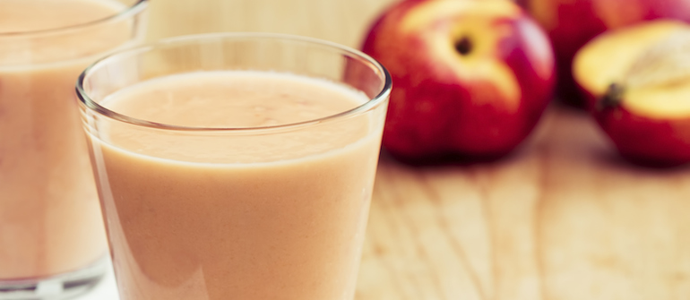

L’estate porta con sé rami carichi di frutta colorata, profumata e gustosa. Se anguria, pesca e melone vi aspettano in frigo (ma non avete voglia della classica macedonia) fatevi ispirare dal nostro tris di ricette per frullati di stagione dolci e dissetanti.
1. Frullato di anguria
Composta per più del 90% da acqua, ci aiuta a idratarci nelle giornate più calde dell’estate. Se amate il suo sapore zuccherino e il suo colore rosso vi mette il buonumore, ecco come utilizzarla per preparare un frullato facilissimo.
Innanzitutto separate la polpa dalla buccia (prima) e dai semini (poi): la quantità di frutta rimasta deve arrivare a riempire una bella tazza. Poi prendete mezzo limone e spremetelo con l’aiuto di un colino. A questo punto unite l’anguria, il limone e una bustina – o mezza, a seconda dei gusti– di Dietor nel frullatore, con un po’ di ghiaccio. Frullate fino a ottenere un composto omogeneo e poi servite con qualche fogliolina di menta, per un effetto più rinfrescante.

2. Frullato di pesche
C’è la noce, la percoca, la saturnina, la merendella: qualunque variante decidiate, nella pesca troverete tante vitamine (A, B, C) e sali minerali (fosforo e magnesio, ma soprattutto potassio) per il vostro benessere estivo.
Come prepararle in un frullato? Scegliete due pesche, sbucciatele, apritele a metà e – dopo aver tolto il nocciolo – tagliatele a pezzi. Versatele nel frullatore, poi unite una tazza di latte, un pizzico di Dietor, un altro pizzico di cannella e il ghiaccio. Servitele il frullato in un bicchiere di vetro, guarnendolo con tre o quattro fette di pesca ancora intera, che avrete tenuto da parte.
3. Frullato di melone
Da solo, con il prosciutto, in una macedonia con la già citata anguria… il melone è il protagonista della nostra estate. Se non lo avete mai frullato, è il momento di provare: come per la prima ricetta, iniziate privando il melone di buccia e semi, poi fatene tanti pezzettini fino a riempire abbondantemente una tazza. Frullate il tutto con due cucchiai di yogurt al naturale, mezzo bicchiere di latte parzialmente scremato, 3 grammi di zenzero fresco, poco ghiaccio e Dietor per dolcificare.
Con quali altri frutti possiamo preparare ottimi frullati nella stagione più calda dell’anno? Suggeriteceli nei commenti!